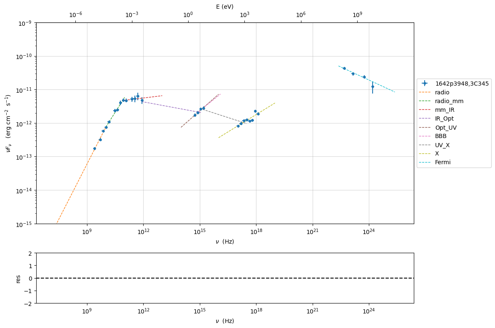

import warnings
warnings.filterwarnings('ignore')
Model fitting 3: External Compton¶
Loading data¶
see the data_format user guide for further information about loading data and External Compton for the information regarding the implementation of the external Conpton model
from jetset.jet_model import Jet
from jetset.data_loader import Data,ObsData
from jetset.test_data_helper import test_SEDs
test_SEDs
['/Users/orion/anaconda3/envs/jetset/lib/python3.8/site-packages/jetset/test_data/SEDs_data/SED_3C345.ecsv',
'/Users/orion/anaconda3/envs/jetset/lib/python3.8/site-packages/jetset/test_data/SEDs_data/SED_MW_Mrk421_EBL_DEABS.ecsv',
'/Users/orion/anaconda3/envs/jetset/lib/python3.8/site-packages/jetset/test_data/SEDs_data/SED_MW_Mrk501_EBL_ABS.ecsv',
'/Users/orion/anaconda3/envs/jetset/lib/python3.8/site-packages/jetset/test_data/SEDs_data/SED_MW_Mrk501_EBL_DEABS.ecsv']
data=Data.from_file(test_SEDs[0])
sed_data=ObsData(data_table=data)
%matplotlib inline
p=sed_data.plot_sed(show_dataset=True)
we filter out the data set -1
sed_data.show_data_sets()
sed_data.filter_data_set('-1',exclude=True)
sed_data.show_data_sets()
p=sed_data.plot_sed()
current datasets
dataset -1
dataset 0
dataset 1
dataset 2
---> excluding data_set/s ['-1']
filter -1 192
current datasets
dataset 0
dataset 1
dataset 2
---> data sets left after filtering None
---> data len after filtering=192
current datasets
dataset 0
dataset 1
dataset 2
sed_data.group_data(bin_width=.2)
sed_data.add_systematics(0.2,[10.**6,10.**29])
p=sed_data.plot_sed()
================================================================================ * binning data * ---> N bins= 80 ---> bin_widht= 0.2 ================================================================================
sed_data.save('3C454_data.pkl')
Phenomenological model constraining¶
see the Phenomenological model constraining: application user guide for further information about phenomenological model constraining
from jetset.sed_shaper import SEDShape
my_shape=SEDShape(sed_data)
my_shape.eval_indices(silent=True)
p=my_shape.plot_indices()
p.setlim(y_min=1E-15,y_max=1E-6)
================================================================================ * evaluating spectral indices for data * ================================================================================
for the synchrotron sed_shaping we include the check for Big Blue Bump
(BBB) component. Moreover, we force the model to use a pure
log-parabolic function and not a log-cubic one in order to get a better
estimation of the BBB component. The fit values of the BBB component
will be used in the ObsConstrain to guess the accretion disk
luminosity and temperature
mm,best_fit=my_shape.sync_fit(check_BBB_template=True,
check_host_gal_template=False,
use_log_par=True,
Ep_start=None,
minimizer='lsb',
silent=True,
fit_range=[9,16])
================================================================================ * Log-Polynomial fitting of the synchrotron component * ---> first blind fit run, fit range: [9, 16] --> class: LSP --> class: LSPTable length=5
| model name | name | val | bestfit val | err + | err - | start val | fit range min | fit range max | frozen |
|---|---|---|---|---|---|---|---|---|---|
| LogParabolaEp | b | -2.984653e-01 | -2.984653e-01 | 5.631694e-02 | -- | -1.527892e-01 | -1.000000e+01 | 0.000000e+00 | False |
| LogParabolaEp | Ep | 1.190850e+01 | 1.190850e+01 | 2.238841e-01 | -- | 1.298338e+01 | 0.000000e+00 | 3.000000e+01 | False |
| LogParabolaEp | Sp | -1.123366e+01 | -1.123366e+01 | 7.306404e-02 | -- | -1.095506e+01 | -3.000000e+01 | 0.000000e+00 | False |
| BBB | nuFnu_p_BBB | -1.155965e+01 | -1.155965e+01 | 6.791135e-02 | -- | -1.095506e+01 | -1.295506e+01 | -8.955061e+00 | False |
| BBB | nu_scale | 7.058302e-02 | 7.058302e-02 | 2.539034e-03 | -- | 0.000000e+00 | -5.000000e-01 | 5.000000e-01 | False |
---> sync nu_p=+1.190850e+01 (err=+2.238841e-01) nuFnu_p=-1.123366e+01 (err=+7.306404e-02) curv.=-2.984653e-01 (err=+5.631694e-02)
================================================================================
my_shape.IC_fit(fit_range=[16,26],minimizer='minuit', silent=True)
p=my_shape.plot_shape_fit()
p.setlim(y_min=1E-15)
================================================================================ * Log-Polynomial fitting of the IC component * ---> fit range: [16, 26] ---> LogCubic fitTable length=4
| model name | name | val | bestfit val | err + | err - | start val | fit range min | fit range max | frozen |
|---|---|---|---|---|---|---|---|---|---|
| LogCubic | b | -1.128855e-01 | -1.128855e-01 | 1.240849e-02 | -- | -1.000000e+00 | -1.000000e+01 | 0.000000e+00 | False |
| LogCubic | c | -1.065003e-02 | -1.065003e-02 | 2.393721e-03 | -- | -1.000000e+00 | -1.000000e+01 | 1.000000e+01 | False |
| LogCubic | Ep | 2.273378e+01 | 2.273378e+01 | 1.453319e-01 | -- | 2.270678e+01 | 0.000000e+00 | 3.000000e+01 | False |
| LogCubic | Sp | -1.043090e+01 | -1.043090e+01 | 6.087264e-02 | -- | -1.000000e+01 | -3.000000e+01 | 0.000000e+00 | False |
---> IC nu_p=+2.273378e+01 (err=+1.453319e-01) nuFnu_p=-1.043090e+01 (err=+6.087264e-02) curv.=-1.128855e-01 (err=+1.240849e-02)
================================================================================
In this case we use the constrain_SSC_EC_model, and we ask to use a
dusty torus and BLR component external component
read the section External Compton for more information regarding the EC model
from jetset.obs_constrain import ObsConstrain
from jetset.model_manager import FitModel
from jetset.minimizer import fit_SED
sed_obspar=ObsConstrain(beaming=25,
B_range=[0.1,0.2],
distr_e='bkn',
t_var_sec=7*86400,
nu_cut_IR=1E9,
SEDShape=my_shape)
prefit_jet=sed_obspar.constrain_SSC_EC_model(electron_distribution_log_values=False,EC_componets_list=['EC_DT','EC_BLR'],R_H=1E18,silent=True)
================================================================================ * constrains parameters from observable *Table length=19
| model name | name | par type | units | val | phys. bound. min | phys. bound. max | log | frozen |
|---|---|---|---|---|---|---|---|---|
| jet_leptonic | R | region_size | cm | 2.845488e+17 | 1.000000e+03 | 1.000000e+30 | False | False |
| jet_leptonic | R_H | region_position | cm | 1.000000e+18 | 0.000000e+00 | -- | False | True |
| jet_leptonic | B | magnetic_field | gauss | 1.500000e-01 | 0.000000e+00 | -- | False | False |
| jet_leptonic | beam_obj | beaming | lorentz-factor* | 2.500000e+01 | 1.000000e-04 | -- | False | False |
| jet_leptonic | z_cosm | redshift | 5.930000e-01 | 0.000000e+00 | -- | False | False | |
| jet_leptonic | gmin | low-energy-cut-off | lorentz-factor* | 1.071498e+01 | 1.000000e+00 | 1.000000e+09 | False | False |
| jet_leptonic | gmax | high-energy-cut-off | lorentz-factor* | 1.601124e+04 | 1.000000e+00 | 1.000000e+15 | False | False |
| jet_leptonic | N | emitters_density | 1 / cm3 | 1.846756e+01 | 0.000000e+00 | -- | False | False |
| jet_leptonic | gamma_break | turn-over-energy | lorentz-factor* | 3.049588e+02 | 1.000000e+00 | 1.000000e+09 | False | False |
| jet_leptonic | p | LE_spectral_slope | 2.357911e+00 | -1.000000e+01 | 1.000000e+01 | False | False | |
| jet_leptonic | p_1 | HE_spectral_slope | 3.500000e+00 | -1.000000e+01 | 1.000000e+01 | False | False | |
| jet_leptonic | T_DT | DT | K | 1.000000e+02 | 0.000000e+00 | -- | False | False |
| jet_leptonic | R_DT | DT | cm | 5.143375e+18 | 0.000000e+00 | -- | False | False |
| jet_leptonic | tau_DT | DT | 1.000000e-01 | 0.000000e+00 | 1.000000e+00 | False | False | |
| jet_leptonic | tau_BLR | BLR | 1.000000e-01 | 0.000000e+00 | 1.000000e+00 | False | False | |
| jet_leptonic | R_BLR_in | BLR | cm | 2.057350e+17 | 0.000000e+00 | -- | False | True |
| jet_leptonic | R_BLR_out | BLR | cm | 4.114700e+17 | 0.000000e+00 | -- | False | True |
| jet_leptonic | L_Disk | Disk | erg / s | 4.232688e+45 | 0.000000e+00 | -- | False | False |
| jet_leptonic | T_Disk | Disk | K | 3.018434e+04 | 0.000000e+00 | -- | False | False |
================================================================================
prefit_jet.eval()
p=prefit_jet.plot_model(sed_data=sed_data)
prefit_jet.save_model('prefit_jet_EC.pkl')
The prefit model should works well for the synchrotron component, but
the EC one is a bit problematic. We can set as starting values a
slightly harder value of p, and a larger value of gamma_break
and gmax. We freeze some parameters, and we also set some
fit_range values. Setting fit_range can speed-up the fit convergence
but should be judged by the user each time according to the physics of
the particular source
Note
With the new implementation of composite model (FitModel class) to set parameters you have to specify the model component, this is different from versions<1.1.2, and this holds also for the freeze method and for setting fit_range intervals, and for the methods relate to parameters setting in general. See the Composite Models and depending pars user guide for further information about the new implementation of FitModel, in particular for parameter setting
EC model fit¶
jet=Jet.load_model('prefit_jet_EC.pkl')
jet.set_gamma_grid_size(100)
fit_model=FitModel( jet=jet, name='EC-best-fit-lsb')
fit_model.show_model_components()
| model name | name | par type | units | val | phys. bound. min | phys. bound. max | log | frozen |
|---|---|---|---|---|---|---|---|---|
| jet_leptonic | gmin | low-energy-cut-off | lorentz-factor* | 1.071498e+01 | 1.000000e+00 | 1.000000e+09 | False | False |
| jet_leptonic | gmax | high-energy-cut-off | lorentz-factor* | 1.601124e+04 | 1.000000e+00 | 1.000000e+15 | False | False |
| jet_leptonic | N | emitters_density | 1 / cm3 | 1.846756e+01 | 0.000000e+00 | -- | False | False |
| jet_leptonic | gamma_break | turn-over-energy | lorentz-factor* | 3.049588e+02 | 1.000000e+00 | 1.000000e+09 | False | False |
| jet_leptonic | p | LE_spectral_slope | 2.357911e+00 | -1.000000e+01 | 1.000000e+01 | False | False | |
| jet_leptonic | p_1 | HE_spectral_slope | 3.500000e+00 | -1.000000e+01 | 1.000000e+01 | False | False | |
| jet_leptonic | T_DT | DT | K | 1.000000e+02 | 0.000000e+00 | -- | False | False |
| jet_leptonic | R_DT | DT | cm | 5.143375e+18 | 0.000000e+00 | -- | False | False |
| jet_leptonic | tau_DT | DT | 1.000000e-01 | 0.000000e+00 | 1.000000e+00 | False | False | |
| jet_leptonic | tau_BLR | BLR | 1.000000e-01 | 0.000000e+00 | 1.000000e+00 | False | False | |
| jet_leptonic | R_BLR_in | BLR | cm | 2.057350e+17 | 0.000000e+00 | -- | False | True |
| jet_leptonic | R_BLR_out | BLR | cm | 4.114700e+17 | 0.000000e+00 | -- | False | True |
| jet_leptonic | L_Disk | Disk | erg / s | 4.232688e+45 | 0.000000e+00 | -- | False | False |
| jet_leptonic | T_Disk | Disk | K | 3.018434e+04 | 0.000000e+00 | -- | False | False |
| jet_leptonic | R | region_size | cm | 2.845488e+17 | 1.000000e+03 | 1.000000e+30 | False | False |
| jet_leptonic | R_H | region_position | cm | 1.000000e+18 | 0.000000e+00 | -- | False | True |
| jet_leptonic | B | magnetic_field | gauss | 1.500000e-01 | 0.000000e+00 | -- | False | False |
| jet_leptonic | beam_obj | beaming | lorentz-factor* | 2.500000e+01 | 1.000000e-04 | -- | False | False |
| jet_leptonic | z_cosm | redshift | 5.930000e-01 | 0.000000e+00 | -- | False | False |
--------------------------------------------------------------------------------
Composite model description
--------------------------------------------------------------------------------
name: EC-best-fit-lsb
type: composite_model
components models:
-model name: jet_leptonic model type: jet
--------------------------------------------------------------------------------
fit_model.freeze('jet_leptonic','z_cosm')
fit_model.free('jet_leptonic','R_H')
fit_model.freeze('jet_leptonic','L_Disk')
fit_model.freeze('jet_leptonic','R_DT')
fit_model.freeze('jet_leptonic','R_BLR_in')
fit_model.freeze('jet_leptonic','R_BLR_out')
fit_model.jet_leptonic.parameters.R.fit_range=[1E16,5E18]
fit_model.jet_leptonic.parameters.gamma_break.fit_range=[300,3000]
fit_model.jet_leptonic.parameters.gmin.fit_range=[2,100]
fit_model.jet_leptonic.parameters.gmax.fit_range=[1000,1E6]
from jetset.minimizer import ModelMinimizer
model_minimizer_lsb=ModelMinimizer('lsb')
best_fit_lsb=model_minimizer_lsb.fit(fit_model,sed_data,1E11,1E29,fitname='EC-best-fit-lsb',repeat=3)
filtering data in fit range = [1.000000e+11,1.000000e+29] data length 21 ================================================================================ * start fit process * ----- fit run: 0
0it [00:00, ?it/s]
- best chisq=1.93395e+01
fit run: 1
- old chisq=1.93395e+01
0it [00:00, ?it/s]
- best chisq=1.93395e+01
fit run: 2
- old chisq=1.93395e+01
0it [00:00, ?it/s]
- best chisq=1.93386e+01
-------------------------------------------------------------------------
Fit report
Model: EC-best-fit-lsb
| model name | name | par type | units | val | phys. bound. min | phys. bound. max | log | frozen |
|---|---|---|---|---|---|---|---|---|
| jet_leptonic | gmin | low-energy-cut-off | lorentz-factor* | 4.297117e+00 | 1.000000e+00 | 1.000000e+09 | False | False |
| jet_leptonic | gmax | high-energy-cut-off | lorentz-factor* | 2.822712e+04 | 1.000000e+00 | 1.000000e+15 | False | False |
| jet_leptonic | N | emitters_density | 1 / cm3 | 2.258362e+01 | 0.000000e+00 | -- | False | False |
| jet_leptonic | gamma_break | turn-over-energy | lorentz-factor* | 3.008818e+02 | 1.000000e+00 | 1.000000e+09 | False | False |
| jet_leptonic | p | LE_spectral_slope | 1.034138e+00 | -1.000000e+01 | 1.000000e+01 | False | False | |
| jet_leptonic | p_1 | HE_spectral_slope | 3.639483e+00 | -1.000000e+01 | 1.000000e+01 | False | False | |
| jet_leptonic | T_DT | DT | K | 4.580689e+02 | 0.000000e+00 | -- | False | False |
| jet_leptonic | R_DT | DT | cm | 5.143375e+18 | 0.000000e+00 | -- | False | True |
| jet_leptonic | tau_DT | DT | 1.781413e-01 | 0.000000e+00 | 1.000000e+00 | False | False | |
| jet_leptonic | tau_BLR | BLR | 2.089862e-04 | 0.000000e+00 | 1.000000e+00 | False | False | |
| jet_leptonic | R_BLR_in | BLR | cm | 2.057350e+17 | 0.000000e+00 | -- | False | True |
| jet_leptonic | R_BLR_out | BLR | cm | 4.114700e+17 | 0.000000e+00 | -- | False | True |
| jet_leptonic | L_Disk | Disk | erg / s | 4.232688e+45 | 0.000000e+00 | -- | False | True |
| jet_leptonic | T_Disk | Disk | K | 3.780580e+04 | 0.000000e+00 | -- | False | False |
| jet_leptonic | R | region_size | cm | 4.119800e+17 | 1.000000e+03 | 1.000000e+30 | False | False |
| jet_leptonic | R_H | region_position | cm | 9.984351e+17 | 0.000000e+00 | -- | False | False |
| jet_leptonic | B | magnetic_field | gauss | 1.277432e-01 | 0.000000e+00 | -- | False | False |
| jet_leptonic | beam_obj | beaming | lorentz-factor* | 1.071574e+01 | 1.000000e-04 | -- | False | False |
| jet_leptonic | z_cosm | redshift | 5.930000e-01 | 0.000000e+00 | -- | False | True |
converged=True
calls=131
mesg=
'The relative error between two consecutive iterates is at most 0.000000'
dof=7
chisq=19.338558, chisq/red=2.762651 null hypothesis sig=0.007190
best fit pars
| model name | name | val | bestfit val | err + | err - | start val | fit range min | fit range max | frozen |
|---|---|---|---|---|---|---|---|---|---|
| jet_leptonic | gmin | 4.297117e+00 | 4.297117e+00 | 3.882204e+01 | -- | 1.071498e+01 | 2.000000e+00 | 1.000000e+02 | False |
| jet_leptonic | gmax | 2.822712e+04 | 2.822712e+04 | 6.287440e+04 | -- | 1.601124e+04 | 1.000000e+03 | 1.000000e+06 | False |
| jet_leptonic | N | 2.258362e+01 | 2.258362e+01 | 3.495097e+01 | -- | 1.846756e+01 | 0.000000e+00 | -- | False |
| jet_leptonic | gamma_break | 3.008818e+02 | 3.008818e+02 | 9.752563e+01 | -- | 3.049588e+02 | 3.000000e+02 | 3.000000e+03 | False |
| jet_leptonic | p | 1.034138e+00 | 1.034138e+00 | 8.354114e-01 | -- | 2.357911e+00 | -1.000000e+01 | 1.000000e+01 | False |
| jet_leptonic | p_1 | 3.639483e+00 | 3.639483e+00 | 5.168124e-01 | -- | 3.500000e+00 | -1.000000e+01 | 1.000000e+01 | False |
| jet_leptonic | T_DT | 4.580689e+02 | 4.580689e+02 | 5.222955e+03 | -- | 1.000000e+02 | 0.000000e+00 | -- | False |
| jet_leptonic | R_DT | 5.143375e+18 | -- | -- | -- | 5.143375e+18 | 0.000000e+00 | -- | True |
| jet_leptonic | tau_DT | 1.781413e-01 | 1.781413e-01 | 3.296905e+00 | -- | 1.000000e-01 | 0.000000e+00 | 1.000000e+00 | False |
| jet_leptonic | tau_BLR | 2.089862e-04 | 2.089862e-04 | 2.564684e+04 | -- | 1.000000e-01 | 0.000000e+00 | 1.000000e+00 | False |
| jet_leptonic | R_BLR_in | 2.057350e+17 | -- | -- | -- | 2.057350e+17 | 0.000000e+00 | -- | True |
| jet_leptonic | R_BLR_out | 4.114700e+17 | -- | -- | -- | 4.114700e+17 | 0.000000e+00 | -- | True |
| jet_leptonic | L_Disk | 4.232688e+45 | -- | -- | -- | 4.232688e+45 | 0.000000e+00 | -- | True |
| jet_leptonic | T_Disk | 3.780580e+04 | 3.780580e+04 | 1.660484e+04 | -- | 3.018434e+04 | 0.000000e+00 | -- | False |
| jet_leptonic | R | 4.119800e+17 | 4.119800e+17 | 1.157586e+18 | -- | 2.845488e+17 | 1.000000e+16 | 5.000000e+18 | False |
| jet_leptonic | R_H | 9.984351e+17 | 9.984351e+17 | 1.675663e+22 | -- | 1.000000e+18 | 0.000000e+00 | -- | False |
| jet_leptonic | B | 1.277432e-01 | 1.277432e-01 | 4.863055e-01 | -- | 1.500000e-01 | 0.000000e+00 | -- | False |
| jet_leptonic | beam_obj | 1.071574e+01 | 1.071574e+01 | 3.382188e+01 | -- | 2.500000e+01 | 1.000000e-04 | -- | False |
| jet_leptonic | z_cosm | 5.930000e-01 | -- | -- | -- | 5.930000e-01 | 0.000000e+00 | -- | True |
-------------------------------------------------------------------------
================================================================================
%matplotlib inline
fit_model.set_nu_grid(1E6,1E30,200)
fit_model.eval()
p2=fit_model.plot_model(sed_data=sed_data)
p2.setlim(y_min=1E-15,y_max=5E-9,x_min=1E6,x_max=2E28)

from jetset.minimizer import ModelMinimizer
model_minimizer_minuit=ModelMinimizer('minuit')
fit_model.freeze('jet_leptonic','R_H')
fit_model.jet_leptonic.parameters.gmax.val=1E5
best_fit_minuit=model_minimizer_minuit.fit(fit_model,sed_data,1E11,1E29,fitname='EC-best-fit-minuit',repeat=2)
filtering data in fit range = [1.000000e+11,1.000000e+29] data length 21 ================================================================================ * start fit process * ----- fit run: 0
0it [00:00, ?it/s]
- best chisq=1.16376e+01
fit run: 1
- old chisq=1.16376e+01
0it [00:00, ?it/s]
- best chisq=1.05577e+01
-------------------------------------------------------------------------
Fit report
Model: EC-best-fit-minuit
| model name | name | par type | units | val | phys. bound. min | phys. bound. max | log | frozen |
|---|---|---|---|---|---|---|---|---|
| jet_leptonic | gmin | low-energy-cut-off | lorentz-factor* | 4.295675e+00 | 1.000000e+00 | 1.000000e+09 | False | False |
| jet_leptonic | gmax | high-energy-cut-off | lorentz-factor* | 1.002469e+05 | 1.000000e+00 | 1.000000e+15 | False | False |
| jet_leptonic | N | emitters_density | 1 / cm3 | 2.257972e+01 | 0.000000e+00 | -- | False | False |
| jet_leptonic | gamma_break | turn-over-energy | lorentz-factor* | 3.008410e+02 | 1.000000e+00 | 1.000000e+09 | False | False |
| jet_leptonic | p | LE_spectral_slope | 1.036353e+00 | -1.000000e+01 | 1.000000e+01 | False | False | |
| jet_leptonic | p_1 | HE_spectral_slope | 3.604263e+00 | -1.000000e+01 | 1.000000e+01 | False | False | |
| jet_leptonic | T_DT | DT | K | 4.431086e+02 | 0.000000e+00 | -- | False | False |
| jet_leptonic | R_DT | DT | cm | 5.143375e+18 | 0.000000e+00 | -- | False | True |
| jet_leptonic | tau_DT | DT | 1.761708e-01 | 0.000000e+00 | 1.000000e+00 | False | False | |
| jet_leptonic | tau_BLR | BLR | 7.299979e-09 | 0.000000e+00 | 1.000000e+00 | False | False | |
| jet_leptonic | R_BLR_in | BLR | cm | 2.057350e+17 | 0.000000e+00 | -- | False | True |
| jet_leptonic | R_BLR_out | BLR | cm | 4.114700e+17 | 0.000000e+00 | -- | False | True |
| jet_leptonic | L_Disk | Disk | erg / s | 4.232688e+45 | 0.000000e+00 | -- | False | True |
| jet_leptonic | T_Disk | Disk | K | 3.853341e+04 | 0.000000e+00 | -- | False | False |
| jet_leptonic | R | region_size | cm | 4.109322e+17 | 1.000000e+03 | 1.000000e+30 | False | False |
| jet_leptonic | R_H | region_position | cm | 9.984351e+17 | 0.000000e+00 | -- | False | True |
| jet_leptonic | B | magnetic_field | gauss | 1.275298e-01 | 0.000000e+00 | -- | False | False |
| jet_leptonic | beam_obj | beaming | lorentz-factor* | 1.069429e+01 | 1.000000e-04 | -- | False | False |
| jet_leptonic | z_cosm | redshift | 5.930000e-01 | 0.000000e+00 | -- | False | True |
converged=True
calls=1240
mesg=
| FCN = 10.56 | Nfcn = 1240 | |||
| EDM = 9.31e+08 (Goal: 0.0002) | ||||
| INVALID Minimum | Valid Parameters | No Parameters at limit | ||
| ABOVE EDM threshold (goal x 10) | Below call limit | |||
| Covariance | Hesse ok | APPROXIMATE | NOT pos. def. | FORCED |
| Name | Value | Hesse Error | Minos Error- | Minos Error+ | Limit- | Limit+ | Fixed | |
|---|---|---|---|---|---|---|---|---|
| 0 | par_0 | 4.2956749 | 0.0000006 | 2 | 100 | |||
| 1 | par_1 | 100.246922e3 | 0.000015e3 | 1E+03 | 1E+06 | |||
| 2 | par_2 | 22.5797225 | 0.0000005 | 0 | ||||
| 3 | par_3 | 300.841009 | 0.000011 | 300 | 3E+03 | |||
| 4 | par_4 | 1 | 6 | -10 | 10 | |||
| 5 | par_5 | 3.604263 | 0.000007 | -10 | 10 | |||
| 6 | par_6 | 443.10861749 | 0.00000004 | 0 | ||||
| 7 | par_7 | 176.170830e-3 | 0.000015e-3 | 0 | 1 | |||
| 8 | par_8 | 7.3000e-9 | 0.0034e-9 | 0 | 1 | |||
| 9 | par_9 | 38.53341003833e3 | 0.00000000004e3 | 0 | ||||
| 10 | par_10 | 410.93223e15 | 0.00027e15 | 1E+16 | 5E+18 | |||
| 11 | par_11 | 127.529767e-3 | 0.000023e-3 | 0 | ||||
| 12 | par_12 | 10.69428574 | 0.00000004 | 0.0001 |
| par_0 | par_1 | par_2 | par_3 | par_4 | par_5 | par_6 | par_7 | par_8 | par_9 | par_10 | par_11 | par_12 | |
|---|---|---|---|---|---|---|---|---|---|---|---|---|---|
| par_0 | 4.1e-13 | 2.04e-09 (0.215) | 1.21e-13 (0.363) | 2.62e-12 (0.359) | 1.42e-06 (0.364) | 1.51e-12 (0.363) | -5.12e-22 | 4.92e-19 | -5.75e-27 | -1.69e-24 | 6.07e+04 (0.356) | -3.23e-15 (-0.218) | -2.26e-18 |
| par_1 | 2.04e-09 (0.215) | 0.000221 | 4.54e-09 (0.587) | 9.84e-08 (0.581) | 0.0533 (0.589) | 5.69e-08 (0.588) | -1.93e-17 | 1.85e-14 | -2.16e-22 | -6.37e-20 | 2.28e+09 (0.577) | -1.22e-10 (-0.353) | -8.49e-14 |
| par_2 | 1.21e-13 (0.363) | 4.54e-09 (0.587) | 2.7e-13 | 5.81e-12 (0.983) | 3.15e-06 (0.997) | 3.36e-12 (0.995) | -1.14e-21 | 1.09e-18 | -1.28e-26 | -3.76e-24 | 1.35e+05 (0.976) | -7.19e-15 (-0.597) | -5.02e-18 |
| par_3 | 2.62e-12 (0.359) | 9.84e-08 (0.581) | 5.81e-12 (0.983) | 1.3e-10 | 6.83e-05 (0.986) | 7.29e-11 (0.984) | -2.47e-20 | 2.37e-17 | -2.77e-25 | -8.15e-23 | 2.92e+06 (0.965) | -1.56e-13 (-0.590) | -1.09e-16 |
| par_4 | 1.42e-06 (0.364) | 0.0533 (0.589) | 3.15e-06 (0.997) | 6.83e-05 (0.986) | 37 | 3.95e-05 (0.998) | -1.34e-14 | 1.29e-11 | -1.5e-19 | -4.42e-17 | 1.58e+12 (0.979) | -8.45e-08 (-0.599) | -5.9e-11 |
| par_5 | 1.51e-12 (0.363) | 5.69e-08 (0.588) | 3.36e-12 (0.995) | 7.29e-11 (0.984) | 3.95e-05 (0.998) | 4.23e-11 | -1.43e-20 | 1.37e-17 | -1.6e-25 | -4.72e-23 | 1.69e+06 (0.977) | -9.01e-14 (-0.597) | -6.29e-17 |
| par_6 | -5.12e-22 | -1.93e-17 | -1.14e-21 | -2.47e-20 | -1.34e-14 | -1.43e-20 | 1.62e-15 | -4.64e-27 | 5.42e-35 | 1.6e-32 | -0.000572 | 3.05e-23 | 2.13e-26 |
| par_7 | 4.92e-19 | 1.85e-14 | 1.09e-18 | 2.37e-17 | 1.29e-11 | 1.37e-17 | -4.64e-27 | 2.35e-16 | -5.21e-32 | -1.53e-29 | 0.55 (0.000) | -2.93e-20 | -2.05e-23 |
| par_8 | -5.75e-27 | -2.16e-22 | -1.28e-26 | -2.77e-25 | -1.5e-19 | -1.6e-25 | 5.42e-35 | -5.21e-32 | 1.18e-23 | 1.79e-37 | -6.42e-09 | 3.42e-28 | 2.39e-31 |
| par_9 | -1.69e-24 | -6.37e-20 | -3.76e-24 | -8.15e-23 | -4.42e-17 | -4.72e-23 | 1.6e-32 | -1.53e-29 | 1.79e-37 | 1.62e-15 | -1.89e-06 | 1.01e-25 | 7.04e-29 |
| par_10 | 6.07e+04 (0.356) | 2.28e+09 (0.577) | 1.35e+05 (0.976) | 2.92e+06 (0.965) | 1.58e+12 (0.979) | 1.69e+06 (0.977) | -0.000572 | 0.55 (0.000) | -6.42e-09 | -1.89e-06 | 7.08e+22 | -3.61e+03 (-0.586) | -2.52 (-0.000) |
| par_11 | -3.23e-15 (-0.218) | -1.22e-10 (-0.353) | -7.19e-15 (-0.597) | -1.56e-13 (-0.590) | -8.45e-08 (-0.599) | -9.01e-14 (-0.597) | 3.05e-23 | -2.93e-20 | 3.42e-28 | 1.01e-25 | -3.61e+03 (-0.586) | 5.38e-16 | 1.35e-19 |
| par_12 | -2.26e-18 | -8.49e-14 | -5.02e-18 | -1.09e-16 | -5.9e-11 | -6.29e-17 | 2.13e-26 | -2.05e-23 | 2.39e-31 | 7.04e-29 | -2.52 (-0.000) | 1.35e-19 | 1.61e-15 |
dof=8
chisq=10.557743, chisq/red=1.319718 null hypothesis sig=0.228038
best fit pars
| model name | name | val | bestfit val | err + | err - | start val | fit range min | fit range max | frozen |
|---|---|---|---|---|---|---|---|---|---|
| jet_leptonic | gmin | 4.295675e+00 | 4.295675e+00 | 6.400531e-07 | -- | 4.297117e+00 | 2.000000e+00 | 1.000000e+02 | False |
| jet_leptonic | gmax | 1.002469e+05 | 1.002469e+05 | 1.487448e-02 | -- | 1.000000e+05 | 1.000000e+03 | 1.000000e+06 | False |
| jet_leptonic | N | 2.257972e+01 | 2.257972e+01 | 5.195583e-07 | -- | 2.258362e+01 | 0.000000e+00 | -- | False |
| jet_leptonic | gamma_break | 3.008410e+02 | 3.008410e+02 | 1.138513e-05 | -- | 3.008818e+02 | 3.000000e+02 | 3.000000e+03 | False |
| jet_leptonic | p | 1.036353e+00 | 1.036353e+00 | 5.713136e+00 | -- | 1.034138e+00 | -1.000000e+01 | 1.000000e+01 | False |
| jet_leptonic | p_1 | 3.604263e+00 | 3.604263e+00 | 6.503548e-06 | -- | 3.639483e+00 | -1.000000e+01 | 1.000000e+01 | False |
| jet_leptonic | T_DT | 4.431086e+02 | 4.431086e+02 | 4.021774e-08 | -- | 4.580689e+02 | 0.000000e+00 | -- | False |
| jet_leptonic | R_DT | 5.143375e+18 | -- | -- | -- | 5.143375e+18 | 0.000000e+00 | -- | True |
| jet_leptonic | tau_DT | 1.761708e-01 | 1.761708e-01 | 1.532161e-08 | -- | 1.781413e-01 | 0.000000e+00 | 1.000000e+00 | False |
| jet_leptonic | tau_BLR | 7.299979e-09 | 7.299979e-09 | 3.436224e-12 | -- | 2.089862e-04 | 0.000000e+00 | 1.000000e+00 | False |
| jet_leptonic | R_BLR_in | 2.057350e+17 | -- | -- | -- | 2.057350e+17 | 0.000000e+00 | -- | True |
| jet_leptonic | R_BLR_out | 4.114700e+17 | -- | -- | -- | 4.114700e+17 | 0.000000e+00 | -- | True |
| jet_leptonic | L_Disk | 4.232688e+45 | -- | -- | -- | 4.232688e+45 | 0.000000e+00 | -- | True |
| jet_leptonic | T_Disk | 3.853341e+04 | 3.853341e+04 | 4.021422e-08 | -- | 3.780580e+04 | 0.000000e+00 | -- | False |
| jet_leptonic | R | 4.109322e+17 | 4.109322e+17 | 2.660756e+11 | -- | 4.119800e+17 | 1.000000e+16 | 5.000000e+18 | False |
| jet_leptonic | R_H | 9.984351e+17 | -- | -- | -- | 9.984351e+17 | 0.000000e+00 | -- | True |
| jet_leptonic | B | 1.275298e-01 | 1.275298e-01 | 2.319318e-08 | -- | 1.277432e-01 | 0.000000e+00 | -- | False |
| jet_leptonic | beam_obj | 1.069429e+01 | 1.069429e+01 | 4.007054e-08 | -- | 1.071574e+01 | 1.000000e-04 | -- | False |
| jet_leptonic | z_cosm | 5.930000e-01 | -- | -- | -- | 5.930000e-01 | 0.000000e+00 | -- | True |
-------------------------------------------------------------------------
================================================================================
%matplotlib inline
fit_model.set_nu_grid(1E6,1E30,500)
fit_model.eval()
p2=fit_model.plot_model(sed_data=sed_data)
p2.setlim(y_min=1E-15,y_max=5E-9,x_min=1E6,x_max=2E28)

jet.energetic_report()
| name | type | units | val |
|---|---|---|---|
| BulkLorentzFactor | 1.069429e+01 | ||
| U_e | Energy dens. blob rest. frame | erg / cm3 | 1.829260e-03 |
| U_p_cold | Energy dens. blob rest. frame | erg / cm3 | 3.394356e-03 |
| U_B | Energy dens. blob rest. frame | erg / cm3 | 6.471177e-04 |
| U_p | Energy dens. blob rest. frame | erg / cm3 | 0.000000e+00 |
| U_p_target | Energy dens. blob rest. frame | erg / cm3 | 0.000000e+00 |
| U_Synch | Energy dens. blob rest. frame | erg / cm3 | 1.927297e-04 |
| U_Synch_DRF | Energy dens. disk rest. frame | erg / cm3 | 2.520901e+00 |
| U_Disk | Energy dens. blob rest. frame | erg / cm3 | 1.331209e-04 |
| U_BLR | Energy dens. blob rest. frame | erg / cm3 | 3.467122e-11 |
| U_DT | Energy dens. blob rest. frame | erg / cm3 | 1.718776e-02 |
| U_CMB | Energy dens. blob rest. frame | erg / cm3 | 0.000000e+00 |
| U_Disk_DRF | Energy dens. disk rest. frame | erg / cm3 | 1.112494e-02 |
| U_BLR_DRF | Energy dens. disk rest. frame | erg / cm3 | 8.489284e-11 |
| U_DT_DRF | Energy dens. disk rest. frame | erg / cm3 | 7.530747e-05 |
| U_CMB_DRF | Energy dens. disk rest. frame | erg / cm3 | 0.000000e+00 |
| L_Sync_rf | Lum. blob rest. frme. | erg / s | 4.051976e+42 |
| L_SSC_rf | Lum. blob rest. frme. | erg / s | 9.051115e+41 |
| L_EC_Disk_rf | Lum. blob rest. frme. | erg / s | 0.000000e+00 |
| L_EC_BLR_rf | Lum. blob rest. frme. | erg / s | 1.863765e+35 |
| L_EC_DT_rf | Lum. blob rest. frme. | erg / s | 1.030114e+44 |
| L_EC_CMB_rf | Lum. blob rest. frme. | erg / s | 0.000000e+00 |
| L_pp_gamma_rf | Lum. blob rest. frme. | erg / s | 0.000000e+00 |
| jet_L_Sync | jet Lum. | erg / s | 1.158539e+44 |
| jet_L_SSC | jet Lum. | erg / s | 2.587889e+43 |
| jet_L_EC_Disk | jet Lum. | erg / s | 0.000000e+00 |
| jet_L_EC_BLR | jet Lum. | erg / s | 5.328865e+36 |
| jet_L_EC_DT | jet Lum. | erg / s | 2.945295e+45 |
| jet_L_EC_CMB | jet Lum. | erg / s | 0.000000e+00 |
| jet_L_pp_gamma | jet Lum. | erg / s | 0.000000e+00 |
| jet_L_rad | jet Lum. | erg / s | 3.087028e+45 |
| jet_L_kin | jet Lum. | erg / s | 9.459731e+45 |
| jet_L_tot | jet Lum. | erg / s | 1.371866e+46 |
| jet_L_e | jet Lum. | erg / s | 3.312706e+45 |
| jet_L_B | jet Lum. | erg / s | 1.171901e+45 |
| jet_L_p_cold | jet Lum. | erg / s | 6.147025e+45 |
| jet_L_p | jet Lum. | erg / s | 0.000000e+00 |
best_fit_minuit.save_report('EC-best-fit-minuit.pkl')
model_minimizer_minuit.save_model('EC_model_minimizer_minuit.pkl')
fit_model.save_model('EC_fit_model_minuit.pkl')
MCMC¶
from jetset.mcmc import McmcSampler
from jetset.minimizer import ModelMinimizer
model_minimizer_minuit = ModelMinimizer.load_model('EC_model_minimizer_minuit.pkl')
We use a flat prior centered on the best fit value. Setting
bound=5.0 and bound_rel=True means that:
the prior interval will be defined as [best_fit_val - delta_m , best_fit_val + delta_p]
with delta_p=delta_m=best_fit_val*bound
If we set bound_rel=False then delta_p = delta_m =
best_fit_err*bound
It is possible to define asymmetric boundaries e.g. bound=[2.0,5.0]
meaning that
for
bound_rel=Truedelta_p = best_fit_val*bound[1]
delta_m =b est_fit_val*bound[0]
for
bound_rel=Falsedelta_p = best_fit_err*bound[1]
delta_m = best_fit_err*bound[0]
In the next release a more flexible prior interface will be added, including different type of priors
Given the large parameter space, we select a sub sample of parameters
using the use_labels_dict. If we do not pass the ‘use_labels_dict’
the full set of free parameters will be used
mcmc=McmcSampler(model_minimizer_minuit)
labels=['N','B','beam_obj','p_1','gamma_break']
model_name='jet_leptonic'
use_labels_dict={model_name:labels}
mcmc.run_sampler(nwalkers=128,burnin=10,steps=50,bound=5.0,bound_rel=True,threads=None,walker_start_bound=0.005,use_labels_dict=use_labels_dict)
mcmc run starting
0%| | 0/50 [00:00<?, ?it/s]
mcmc run done, with 1 threads took 277.30 seconds
print(mcmc.acceptance_fraction)
0.5128125
mcmc.model.set_nu_grid(1E6,1E30,200)
p=mcmc.plot_model(sed_data=sed_data,fit_range=[1E11, 1E27],size=50)
p.setlim(y_min=1E-13,x_min=1E6,x_max=2E28)

f=mcmc.corner_plot()

f=mcmc.plot_chain('p_1',log_plot=False)

Save and reuse MCMC¶
mcmc.save('mcmc_sampler.pkl')
from jetset.mcmc import McmcSampler
from jetset.data_loader import ObsData
from jetset.plot_sedfit import PlotSED
from jetset.test_data_helper import test_SEDs
sed_data=ObsData.load('3C454_data.pkl')
ms=McmcSampler.load('mcmc_sampler.pkl')
ms.model.set_nu_grid(1E6,1E30,200)
p=ms.plot_model(sed_data=sed_data,fit_range=[1E11, 1E27],size=50)
p.setlim(y_min=1E-13,x_min=1E6,x_max=2E28)

f=ms.plot_par('beam_obj',log_plot=False)

f=ms.corner_plot()